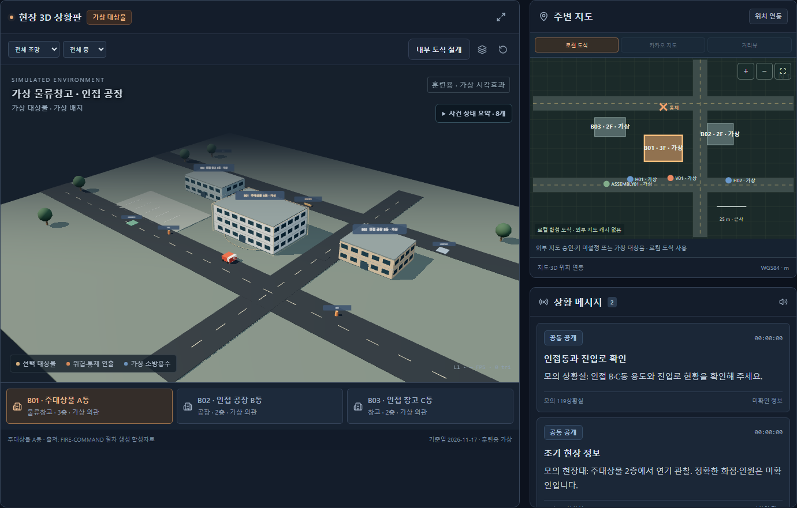

만들고, 준비하기
역할·담당자·대체자와 임무카드를 준비합니다. 대상물과 사건을 작성하고, 숙지 확인과 리허설을 거쳐 발행합니다.
임무 숙지부터 사건 진행, 지휘결정과 사후강평까지.
진행자는 PC로 운영하고, 참가자는 대형 화면을 보며 토론합니다.

FROM PREPARATION TO REVIEW
역할·담당자·대체자와 임무카드를 준비합니다. 대상물과 사건을 작성하고, 숙지 확인과 리허설을 거쳐 발행합니다.
진행자가 사건을 공개하고 참가자의 구두 보고·판단을 기록합니다. 별도 공용화면에는 공개된 상황을 표시합니다.
사건과 장면을 같은 순서로 다시 보고, 관찰 근거를 개선과제와 재훈련으로 연결합니다. 강평 자료와 전체 백업을 저장합니다.
GET STARTED
이 사이트는 다운로드와 사용 안내를 제공합니다.
훈련 기능과 기록 저장은 설치한 Windows 앱에서 실행합니다.
Windows 설치 프로그램을 실행합니다. Python과 웹 자원은 설치본에 포함됩니다.
바로가기를 누른 뒤 실행 창의 ‘훈련 스튜디오 열기’를 선택합니다. 기본 브라우저에서 훈련을 준비합니다.
훈련 화면의 ‘공용화면’을 눌러 프로젝터 쪽에 표시합니다. 진행자 콘솔을 그대로 화면 공유하지 않습니다.
실행 창의 ‘전체 훈련 백업 저장’을 이용합니다. 백업 DB와 함께 생성된 manifest 파일을 함께 보관하세요.
WINDOWS DISTRIBUTION
버전과 파일 무결성을 확인한 뒤 설치하세요.
최종 파일 생성 후 표시됩니다.